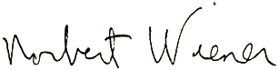
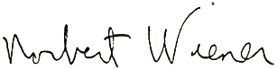

Why does Joel admire him?
He managed to teach complex topics without ever having to write a line of javascript!
What is something that Joel doesn't know about Norbert?
It was the same cigar in every picture.
He managed to teach complex topics without ever having to write a line of javascript!
It was the same cigar in every picture.
